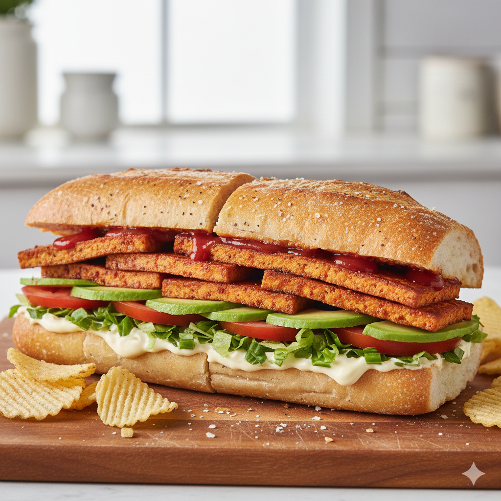

Home
Bosh Vegan Bacon Lettuce and Tomato (BLT) Sandwich

Description
A delicious and guilt free "fake-on" lettuce and tomato, with fresh salad, homemade dressing, and a sweet-smokey tofu protein filling
Ingredients
- 2 tbsp smoked paprika
- 3 tbsp plant-based mayonnaise
- ciabatta baguette
- Salt & pepper to taste
- 1 large avocado
- 1 baby gem lettuce
- 3 tomatoes
- 1 x 450g block of firm smoked tofu
- vegetable oil for frying
- 25g cornflour
- Drizzle of soy sauce
- Drizzle of maple syrup
- to serve - crisps
Instructions
- Press the tofu in the tofu press for 30 mins so it's well dried
- Then cut it into thin slices
- Next, coat the tofu
- Pour the cornflour and smoked paprika into the mixing bowl and stir them together with a fork
- Roll the slices of tofu in the cornflour paprika mix
- Drizzle the tofu with your maple syrup and soy sauce and set aside to marinade whilst you make your sandwich
- Bake the bread for 5-7 minutes until warmed through
- Core and dice the lettuce
- Finely slice the tomatoes
- Halve and carefully stone the avocado by tapping the stone firmly with the heel of a knife so that it lodges in the pit, then twist and remove the stone
- Scoop out the flesh with a dessert spoon, put the avocado on a chopping board and finely slice
- Cut the bread in half longways
- Heat 1cm of oil in the frying pan until the end of a wooden spoon bubbles when dipped in
- Lay the slices of tofu in the oil and fry them for 2 minutes on each side
- Take the slices of tofu out of the pan and put them on a plate lined with kitchen paper
- Cover the bottom of the ciabatta with egg free mayo
- Lay out the slices of avocado
- Season with salt and pepper
- Sprinkle over the lettuce
- Lay over the tomato slices
- Top with the bacon
- Cover with tomato ketchup and put the sandwich lid on
- Cut the sandwich into 4 and serve with your favourite crisps